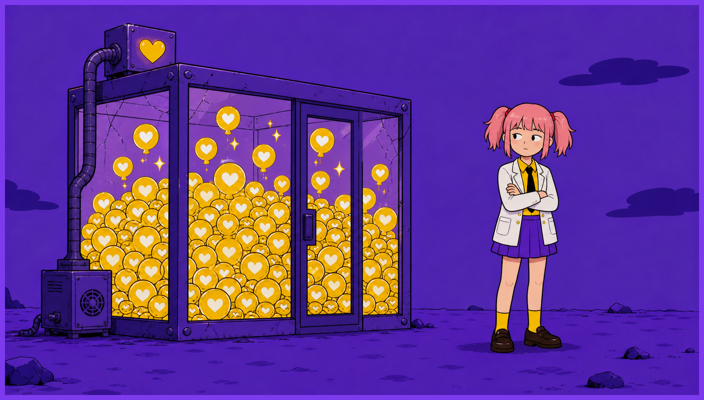
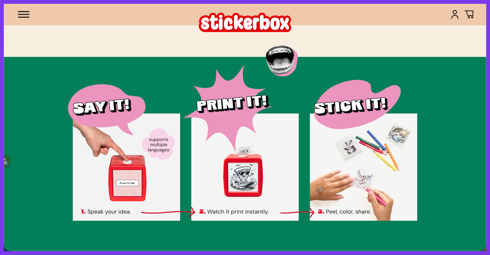
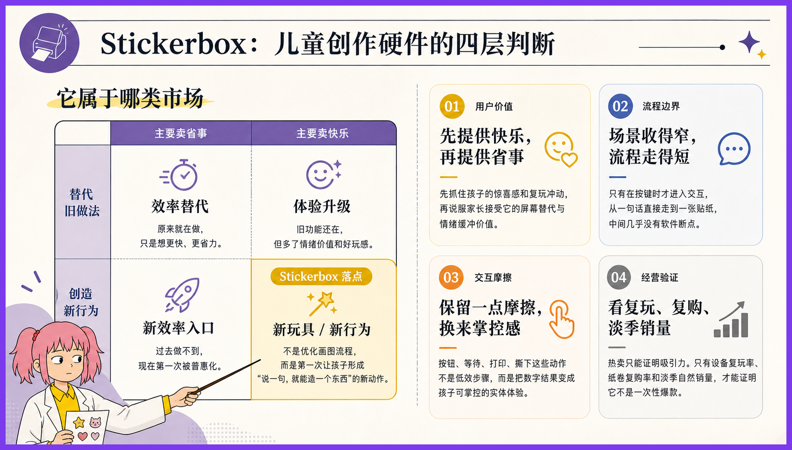
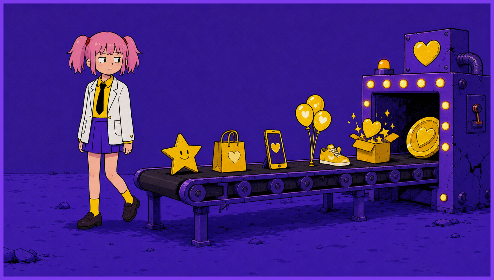

事实如此，不论我信与不信。
AI 硬件这个领域，人人都想做下一代入口。
发布会一个比一个宏大，PPT 上一个比一个震撼领先。创业者站在台上，谈生态、谈闭环、谈All in One，就差说自己其实是钢铁侠了。
可太平洋对岸，有一个已经赚到钱的AI硬件，只是一个加了AI的贴纸打印机。 孩子按住大白按钮说"戴太阳镜的恐龙"，五秒后机器吐出一张黑白线稿，孩子涂色、撕下、贴满冰箱。
根据以上事实，无论如何我也不能相信，那些天天喊入口的人，真的懂 AI 硬件。
这件事让我前老板很难堪。不过他没意识到，或者他意识到了也不承认。
去年 (前情提要：AI初创软件公司，坐标京西，去年9月入职)，老板发动所有人给他想产品方向。那阵子我每天的工作就是看各种 AI 产品，看到眼睛发直。

有一天，一个产品同事兴冲冲和我说，看到一个叫 Stickerbox 的东西特别有意思。孩子说话，它出贴纸，卖得很好。我听完也觉得好。
用户明确，场景垂直，需求清晰，硬件条件成立，付费意愿充足，持续性差了点，但不失为一个好产品。

但老板没拍板。
他说，“咱们有可能 AI 硬件，咱们做 AI 硬件不太可能”。
我对 Stickerbox 的印象，就停留在 "打法很聪明的 AI 硬件产品"。
后来老板似乎下定决心了。
他觉得做 AI 应用软件上限太低，容易被大厂吃掉，要做 AI 硬件，要水涨船高，要活在未来。他让我一个人专门调研AI硬件方向。
这时候，我又想起来阿美莉卡的优先AI硬件产品代表之一，Stickerbox。
举一反三，咱们也可以做这类的产品嘛。
而且这种类型，对幻觉容忍度高，硬件主要做加法技术成本更低，适合咱们这种半路出家的人。
我把这些讲给老板听。
老板说，做 AI 玩具没有前途。前几年火，现在不火了。技术价值不高。他要做未来的 AI 入口。
我听了没说话。
近几年这种现象特别多。前有贾维斯引领风骚，后有李维斯、张维斯、大胃袋维斯等后起之秀。
必须要随身携带，精致优雅，无感收集，自动处理，敲一敲能帮你买菜打车点咖啡。
人人都在想将全部的梦想与野心压缩进一个小玩意 (如，眼镜，戒指，胸针，T蛋，G塞等) 里面，不然不配叫 AI 硬件。
可有时候用户愿意掏钱买的，有时候只是一个能解决问题的塑料盒子。
Stickerbox 两周卖完全年库存，Product Hunt 日榜第二，eBay 上加价到三倍。
我老板梦想的 AI 入口，还没见影。这种"没出息"的小盒子，已经把刀乐挣了。
最近拜读雄文《置身钉内》，其中说到 “发心”应该要单纯，不然容易出大娄子。我觉得这话送给 AI 硬件创业者也挺合适。
Stickerbox 向我证明，只要回答清楚需求，再简单的场景，也能做出好产品。
我老板大概至今也不信。
他还在等那个能让他"水涨船高"的大机会。
但机会有时候就藏在你看不起的小东西里，藏在细微的需求里。

上面就是我与 Stickerbox 的故事。谢谢你看完。